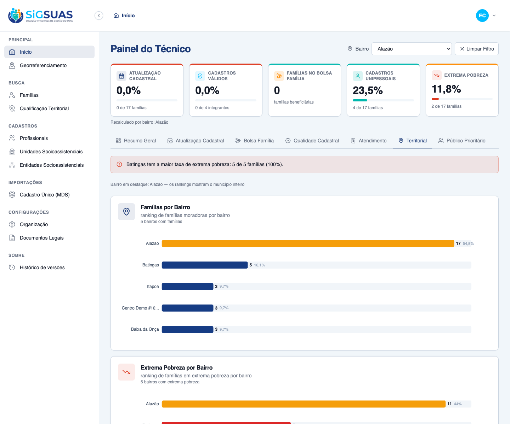
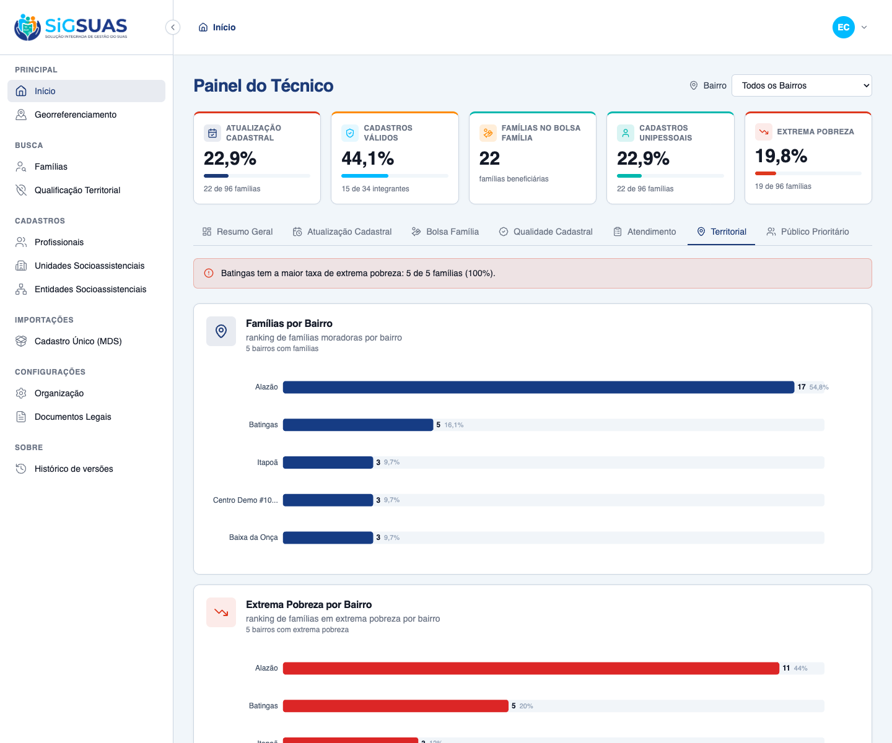

9 Critérios de Aceite verificados: 4 por navegador (dirigindo o app real como Master), 1 parcial (UI + suíte) e 4 automatizados (Pest). O Painel 6 entrega dois rankings municipais por bairro — Famílias por Bairro e Extrema Pobreza por Bairro (atribuição espacial ST_Contains) — e a Situação do Domicílio (Urbana/Rural/Não informada). Os rankings ficam municipais, destacando o bairro selecionado; só a Situação do Domicílio recalcula pelo filtro (RG01/P3). Resultado geral: todos os critérios ATENDIDOS. Dados de evidência semeados no tenant E2E: Famílias por Bairro (Alazão 17, Batingas 5, Itapoã 3, Centro Demo 3, Baixa da Onça 3) e Extrema Pobreza (Alazão 11, Batingas 5, Itapoã 3, Centro Demo 3, Baixa da Onça 3); a maior TAXA de extrema pobreza é de Batingas (5/5 = 100%), evidenciando o ranking independente do CA08.
| CA | Critério | Status |
|---|---|---|
| CA08 | Ranking de bairros vulneráveis (extrema pobreza ordenada) | ATENDIDO · navegador |
| RG01-a | Comportamento padrão — "Todos os Bairros" (consolidação municipal) | ATENDIDO · navegador |
| RG01-b | Comportamento dinâmico — rankings municipais + destaque; domicílio recalcula | ATENDIDO · navegador |
| RG01-c | Ação rápida — "Limpar Filtro" volta ao município | ATENDIDO · navegador |
| RN08 | Indicadores do Painel 6 (rankings + domicílio) | ATENDIDO · navegador + automatizado |
| CA-EXTREMA-NULA | Renda nula conta como extrema pobreza | ATENDIDO · automatizado |
| CA-DOMICILIO-PARTICAO | Partição da Situação do Domicílio | ATENDIDO · automatizado |
| CA-VAZIO | Recorte sem famílias | ATENDIDO · automatizado |
| CA-ISOLAMENTO | Isolamento multi-tenant + validações | ATENDIDO · automatizado |
Critério (Gherkin): Dado que acesso a aba "Territorial" Quando observo o gráfico de extrema pobreza por localidade Então os bairros são ordenados do maior para o menor volume de famílias extremamente pobres.
Como foi testado: Login como Master → abrir a aba Territorial. O gráfico "Extrema Pobreza por Bairro" (barras horizontais vermelhas) lista os bairros ordenados do maior para o menor volume de famílias em extrema pobreza (R$ 0,00–218,00). O topo (Batingas) difere do ranking de Famílias por Bairro (Alazão), evidenciando que a extrema pobreza é ranqueada de forma independente.
Critério (Gherkin): Dado que acabei de carregar a aba "Territorial" Quando nenhum bairro está selecionado Então o endpoint é chamado sem neighborhood_uuid E os dois rankings mostram a consolidação municipal (sem destaque) E a Situação do Domicílio reflete o município inteiro.
Como foi testado: Ao carregar, o filtro global de Bairro inicia em Todos os Bairros. Os dois rankings e a Situação do Domicílio exibem a consolidação municipal, sem qualquer bairro destacado.
Critério (Gherkin): Dado que o filtro global está em "Todos os Bairros" Quando eu seleciono um bairro Então o endpoint é chamado com o neighborhood_uuid do bairro E os dois rankings permanecem municipais, mas o bairro selecionado é destacado E a Situação do Domicílio recalcula considerando apenas as famílias do bairro (P3).
Como foi testado: Selecionar o bairro Alazão no filtro global. Os dois rankings permanecem municipais (mesmos valores), mas a barra do Alazão passa a âmbar (destaque); a Situação do Domicílio recalcula apenas para o Alazão.

Critério (Gherkin): Dado que estou com um bairro selecionado Quando eu aciono "Limpar Filtro" Então o endpoint é chamado sem neighborhood_uuid E o destaque some e a Situação do Domicílio volta à consolidação municipal.
Como foi testado: Com "Alazão" selecionado, acionar Limpar Filtro. O painel retorna imediatamente à visão "Todos os Bairros": o destaque some e a Situação do Domicílio volta ao município.

Critério (Gherkin): Dado um recorte municipal com famílias geocodificadas Quando o painel é calculado Então "Famílias por Bairro" traz o ranking (desc) de famílias por bairro E "Extrema Pobreza por Bairro" traz o ranking (desc) de famílias em extrema pobreza por bairro E "Situação do Domicílio" traz Urbana/Rural/Não informada.
Como foi testado: A aba apresenta os três indicadores do RN08: os dois rankings por bairro (barras horizontais, Top-N desc) e a Situação do Domicílio (rosca). A atribuição família→bairro é espacial (ST_Contains); a exatidão do agrupamento, do Top-N e da faixa de extrema pobreza é coberta pela suíte Pest (apêndice).
Critério (Gherkin): Dado uma família geocodificada com per_capita_income nulo Quando o ranking de extrema pobreza é calculado Então essa família é contada no bairro que a contém (renda nula = R$ 0,00).
Como foi testado: Verificado pela suíte Pest — it counts null income as extreme poverty in the extreme-poverty ranking. Definição consistente com o KPI 5 (extrema pobreza) da barra fixa.
Evidência por cobertura automatizada — ver Anexo.
Critério (Gherkin): Dado o recorte com famílias urbanas, rurais e sem informação Quando a Situação do Domicílio é calculada Então urban + rural + not_informed = total do recorte E os percentuais somam 100%.
Como foi testado: Verificado pela suíte Pest — it partitions the domicile situation into urban/rural/not-informed. Domicílio nulo ou fora do enum ⇒ "Não informada".
Evidência por cobertura automatizada — ver Anexo.
Critério (Gherkin): Dado um recorte sem nenhuma família geocodificada Quando o painel é calculado Então os dois rankings vêm vazios (total_neighborhoods 0) E a Situação do Domicílio traz os 3 grupos com 0 e percentuais 0, sem erro.
Como foi testado: Verificado pela suíte Pest — it returns empty rankings and zeroed domicile when the scope has no families.
Evidência por cobertura automatizada — ver Anexo.
Critério (Gherkin): Dado um usuário vinculado ao Tenant A Quando ele solicita o Painel 6 Então apenas famílias/bairros do Tenant A entram nos cálculos E um neighborhood_uuid fora do município (ou limit inválido) retorna 422; sem permissão retorna 403.
Como foi testado: Verificado pela suíte Pest — DashboardTerritorialIsolationTest (BelongsToTenant), 422 para neighborhood fora do município, 422 para limit fora de 1..100 e o gate do operador base (403).
Evidência por cobertura automatizada — ver Anexo.
PASS Tests\Feature\Dashboard\TerritorialTest ✓ it ranks neighborhoods by family volume desc and applies Top-N (CA-… 0.61s ✓ it counts null income as extreme poverty in the extreme-poverty ran… 0.06s ✓ it partitions the domicile situation into urban/rural/not-informed… 0.07s ✓ it keeps rankings municipal (only highlighting) while domicile reca… 0.09s ✓ it returns empty rankings and zeroed domicile when the scope has no… 0.04s ✓ it returns 422 for a neighborhood_uuid outside the tenant municipal… 0.05s ✓ it returns 422 for a limit out of the 1..100 range (RN06) 0.04s ✓ it denies the panel to the base operator without the dedicated role 0.04s ✓ it grants the panel to the Master without any add-on role 0.04s PASS Tests\Feature\TenantIsolation\DashboardTerritorialIsolationTest ✓ it never counts families or neighborhoods from another tenant in th… 0.06s Tests: 10 passed (58 assertions) Duration: 1.20s